身份一：AI原住民
北大人工智能本科
搭建AI自动化出海引擎（谷歌/ Youtube/ TK/ 海外媒体）
搭建AI投资系统/个人第二大脑/工程师团队
AI社媒账号粉丝5万+
北大人工智能本科
搭建AI自动化出海引擎（谷歌/ Youtube/ TK/ 海外媒体）
搭建AI投资系统/个人第二大脑/工程师团队
AI社媒账号粉丝5万+
国际顶尖咨询公司BCG 5年（跨国企业/主权基金/服装民企/家族产业）
国际领先企业AI前向部署（Forward Deploy）
本土企业AI转型顾问
分享最牛逼的人和公司怎么用AI：有的人在和AI聊天，有的人在用AI变革公司的生产系统
看趋势和数字：AI 为什么不是短期噱头，而是重新颠覆世界规则的又一次工业革命
讲老板必须懂的 AI 的术和道，现场就让你搭出自己的第一个AI产品原型
在座的各位今天都在怎么用AI？
看看硅谷的AI弄潮儿、全球顶尖企业、中国领先同行都在怎么用AI
 YC
YCY Combinator，硅谷最有影响力的创业加速器之一，投过 Airbnb、Stripe、Dropbox、Coinbase。CEO Garry Tan 想做一个内部 founder CRM，给合伙人看每家被投公司的融资状态、进展和跟进。
要产品经理写需求、设计师画界面、工程师读老代码库、QA 测试、安全检查权限、最后还有发布和文档。一个小功能要整支团队跑很久。
把 Claude Code 组织成一支 AI 软件生产军团：CEO代理、产品经理、工程负责人、设计师、QA、安全审计、增长负责人，各自分工。他不写每一行代码，只在上面定目标、看结果、做验收、纠偏。
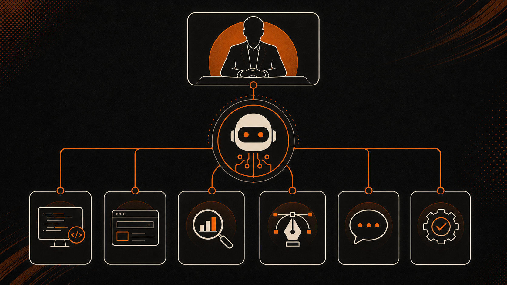
Walmart，全球最大零售商之一。2025 财年收入约 6,810 亿美元，全球员工约 210 万人。卖服装、杂货、日用品，做线上电商和线下门店。
趋势来得太快，商品上得太慢。今天 TikTok 上一个颜色、一个版型、一个穿搭风格火了，传统链路从发现趋势到设计、采购、生产、上架要走半年，窗口已经过了。
Walmart 搭了一台 AI 趋势到商品机器：持续看社交趋势、网络数据、潮流人群信号和消费变化，把外部信号翻译成给商品团队的输入：哪些 SKU 值得试、什么颜色优先、什么价位、哪些地区门店先上、线上页面主打什么卖点。设计和采购拿着这套结论进商品会，快速决策、快速上新。
吉宏股份，中国跨境社交电商上市公司，业务覆盖多个海外市场，涉及选品、素材、广告投放、翻译、客服和供应链。
不是把中文翻译成英文，而是面对一堆国家、一堆语言、一堆平台。每个国家用户、价格敏感度、图片偏好、广告文案、客服问题都不一样。过去只能靠运营一个国家一个国家试，一个商品一个商品测。
吉宏搭了一套 AI 跨境增长中枢：每天读用户行为数据，辅助选品、生成素材、写广告语、做本地化、承接客服，再把投放和客服数据回流到下一轮优化。系统发现东南亚某国对一个家居小商品点击突然上升，AI 先从商品池里挑相似货，生成三套卖法：省空间、便宜实用、适合送礼，再生成当地语言的标题、广告文案、短视频脚本和客服 FAQ。第二天根据实际数据反馈动态调整：客户一直问尺寸就突出尺寸，一直问物流就强化配送承诺。
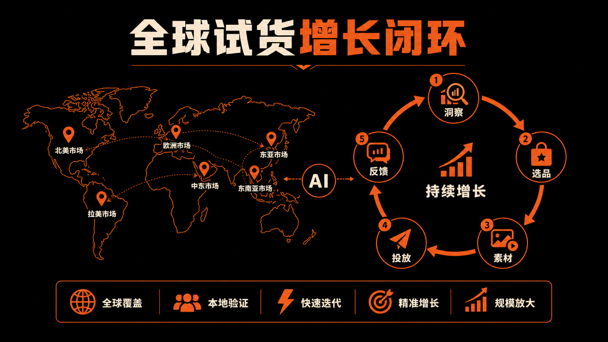
每天自动拉数据分析关键词趋势 -> 批量选题/写文章/搭建网站 -> 自动督促平台索引 -> 自动分析网页和文章数据表现，寻找下一篇选题
上线一周进Google关键词首页 | 浏览量 10x
 Youtube
Youtube Tiktok
Tiktok InstagramPinterest
InstagramPinterest每天自动拉数据分析平台趋势 -> 拆解网站素材选题 -> 自动生成图片短视频 -> 分析
自动日更 | 首周浏览量5000+
每天自动刷论坛 -> 定位高潜页面/帖子 -> 自动回复讨论/软件植入 -> 记录追踪重点线索
首周覆盖网站200+ | 高质量帖子10+
每天自动刷记者问题 -> 自动邮件联系投稿 -> 写文章/回复记者问题 -> 记录追踪约稿
首周建联50+ | 约定特稿1篇
你问，它答。帮你写邮件、查资料、改 PPT、做摘要。
你给它一个任务，它能稳定跑完一整套流程。读单、生成、回复、归档、提醒，自己跑完。
你给它目标，它自己看数据、拆任务、调工具、推动作、看结果、再优化。它不是一个工具，是一个数字员工，甚至是一个数字部门。
 AP
APAP（美联社），美国通讯社，给全球大量媒体提供新闻内容。
每个季度面对大量上市公司财报。大公司值得记者深挖，但中小公司也需要基础报道。过去记者和编辑要把结构化财务数据改写成标准新闻短稿，覆盖量有限，占用大量人力。
AP 搭了一套 AI 财报短稿生产线。财报数据进来，AI 根据营收、利润、同比变化、预期差异生成标准财经短稿，编辑把关后发布。一家公司发布季报，系统拿到收入、净利润、每股收益、同比变化和分析师预期，AI 自动写出一篇短稿：本季度收入多少、利润多少、是否高于市场预期、股价盘后什么反应。编辑只需要快速检查事实和措辞，记者把时间转向采访、分析、深度报道。
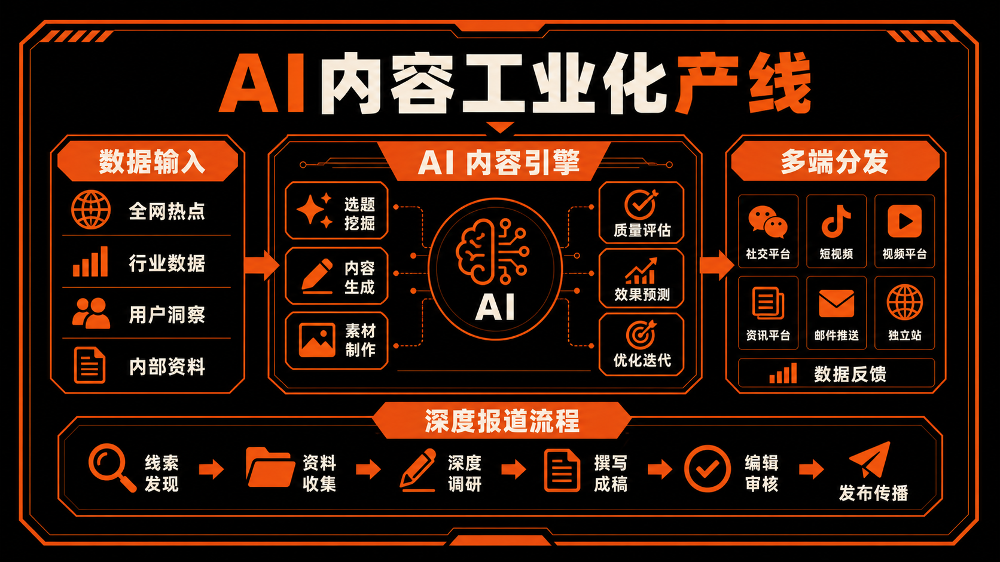
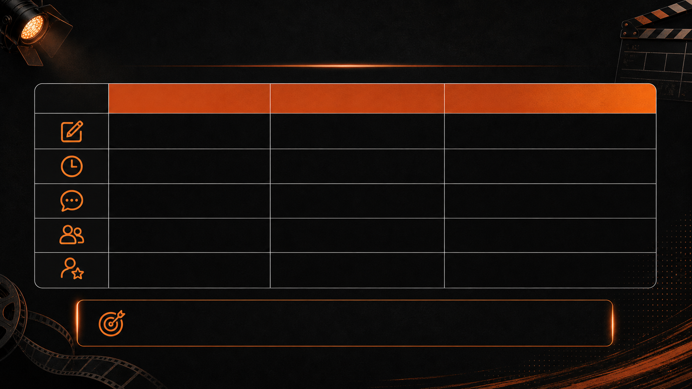
AI 带来的不是单一环节效率提升，而是内容“创作—反馈—再创作”闭环的建立。
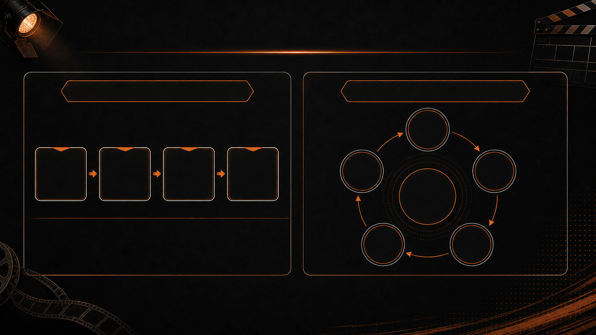
过去，短剧是一条项目制生产线；未来，短剧将成为可持续迭代的内容系统
一次上线，一次消耗
真实需求 → 内容生成 → 反馈循环
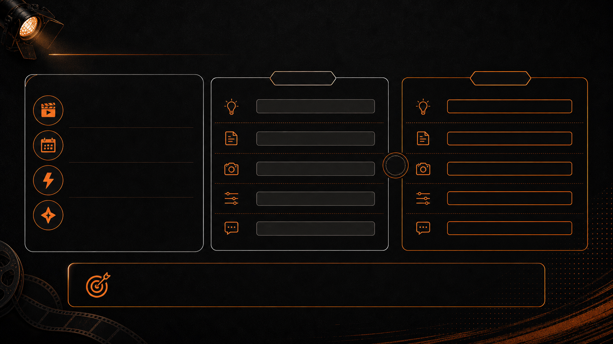
AI 短剧并不等于几天批量洗稿
真正有市场表现的精品内容，仍然需要半个月左右剧本开发、一个月左右制作、调优、上线
AI 节省的是降低低效执行环节的时间与成本
被释放出来的是让创作者把更多精力回到“内容本身”
AI 不是让内容变得更草率，而是让创作者把时间重新花回“内容本身”
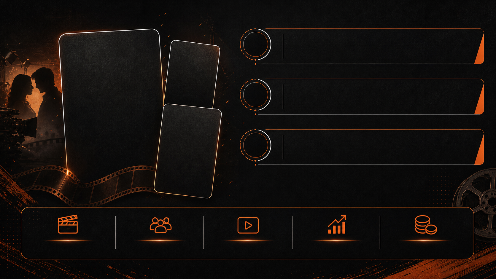
爆款案例：首日 ROI 0.5，CPI 约 4 美金
首日 ROI 0.5
CPI 约 4 美金
说明 AI 内容在付费投放环境下，已经具备可验证的商业效率
这不是极限压缩成本下的粗制内容
项目仍然经历了：半个月剧本开发、一个月制作上线
说明“精品化 AI 内容”已经能够进入真实商业竞争
AI 短剧不再只是技术 Demo，而是开始成为可规模化投入、可评估 ROI 的内容商品
裕同科技，包装印刷制造企业。全球 48 个制造基地、近 100 个法人组织，2024 年营收约 170 亿元量级。
每天大量客户 PO 单进来，有 PDF、Excel、邮件截图，里面是物料编码、币种、单价、数量、交期。人工录入又慢又烦，错一个数字，库存、生产、财务全部跟着错。
裕同搭了一套订单数字员工。客户发来一张 PO，AI 先读文件，把物料编码、数量、交期、价格抽出来，再和系统里的物料、价格、交期规则做比对。发现单价不一致、物料编码缺失、交期冲突，就打标给人处理；没问题的订单直接同步进 自己的业务系统。
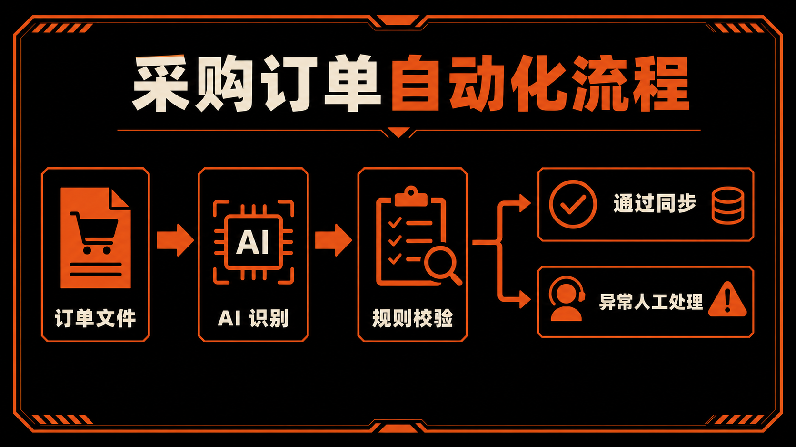
绝味食品，中国卤味连锁上市公司。2024 年营收约 62.57 亿元，长期是万店连锁模型。
总部管不到每家店的细节。天气、客流、周边人群、会员复购状态每天都不同，统一发一张促销海报，解决不了所有门店的问题。
绝味做的是一套连锁门店 AI 经营班子：AI 点餐智体、AI 店长、AI 会员智体。比如某个城市下雨，几家门店客流下降，同时系统发现一批会员 30 天没复购。AI 会员智体先圈出这批人，按消费偏好生成不同权益；AI 店长给每家门店推今日动作：重点推哪个套餐、什么时候发券、店员怎么说；AI 点餐智体在前台根据用户选择继续推荐。
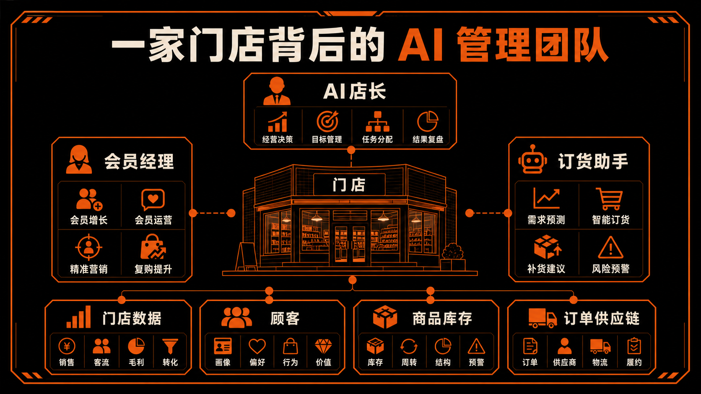
Salient，美国金融服务 AI voice agent 公司，主要服务贷款、汽车金融、金融催收和客户服务这类高电话量场景。
电话量巨大，但每通电话又不能乱打。客服要知道客户账单、还款状态、合同规则，还要合规记录。遇到破产、律师介入、军人身份、严重财务困难，必须立刻转人工。
Salient 搭的是一套 AI 金融电话员工系统。AI voice agent 可以打电话、接电话、发短信、发邮件、记录系统、识别风险场景。一个汽车贷款客户逾期了，AI 先读账单、逾期天数和历史沟通记录，自动拨号。客户接通后，AI 解释账单、确认身份、询问还款安排。客户说"下周五能付一半"，AI 就生成还款计划，发短信确认，把承诺日期写回系统。客户一旦说"律师已经联系我"或"我要申请破产"，AI 立刻停止标准流程，把通话摘要、风险标签和建议动作转给人工专员。
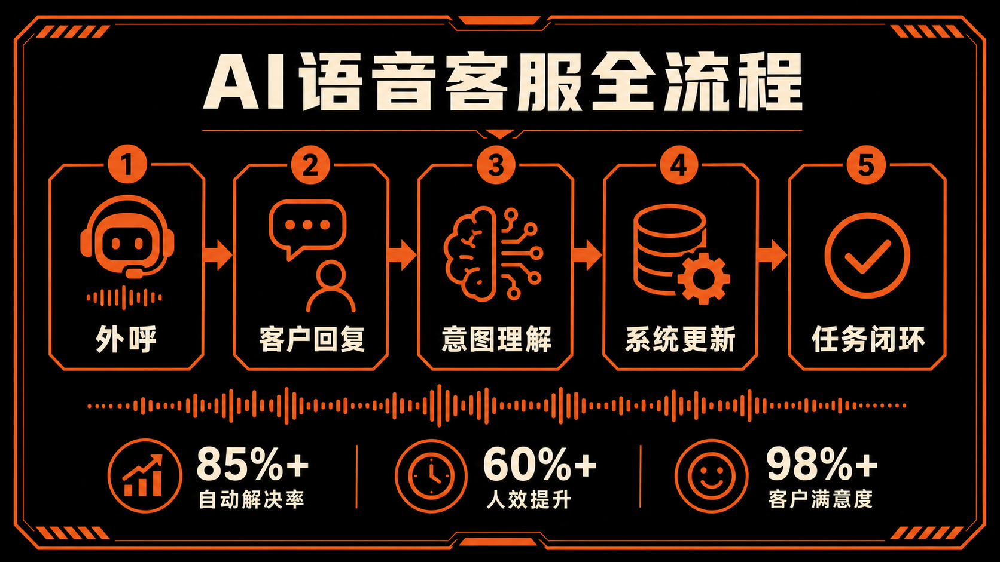
深圳千岸科技，跨境消费电子和自有品牌公司，核心品牌包括 Ohuhu、Tribit。2024 年营收约 16.67 亿元，团队超 400 人，产品卖到北美、欧洲、亚洲。
数据散。销售、广告、红人、客服、Listing 都在不同系统里。老板问哪个国家赚钱、哪个广告亏钱、哪个客服问题影响转化，要几个人拉表，几天后才有答案。
千岸做的是一套跨境经营驾驶舱 + AI 客服系统，把多国家销售、广告归因、红人发货、客服绩效和产品知识库全部接起来。某个欧洲国家销量下降，过去广告、客服、运营三个团队分别拉表；现在系统同时看到广告花费、红人发货状态、客服问题、Listing 变化和产品评价。AI 发现差评集中在某个产品参数解释不清，于是更新客服知识库、生成新回复模板，同时提醒运营优化 Listing 页面。下一轮客服回复和转化数据再回流到系统里。
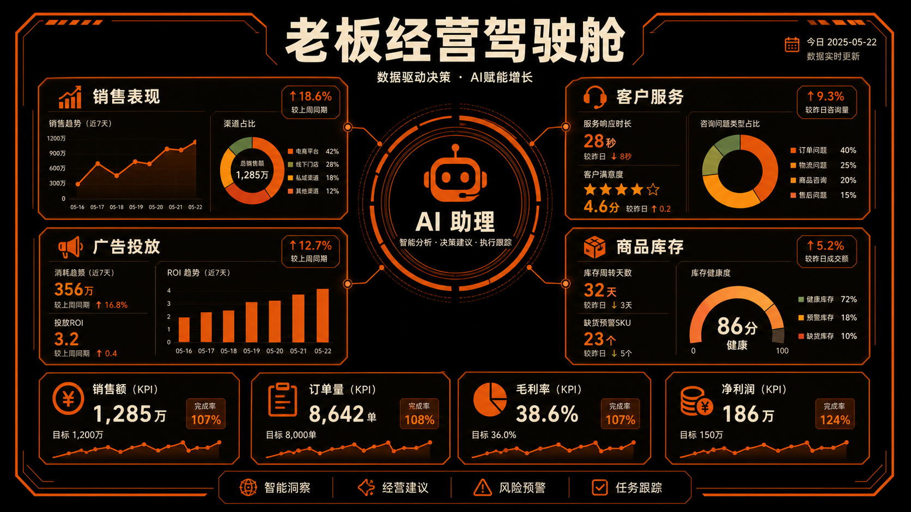
| 职能 | 低阶（聊天机器人） | 高阶（业务操盘者） |
|---|---|---|
| 内容生产 | 帮我写一篇稿 | 内容产线，可重复内容变工业化产能 |
| 内容引擎 | 帮我做一段视频 | 数字驱动、自动化的内容生产流水线，放大人类创意 |
| 供应链 / 订单 | 帮我解释一下这张订单 | 订单数字员工，读单、核单、同步系统全包 |
| 销售 / 出海 | 帮我翻译一段产品介绍 | 增长中枢，每天替你试货、试图、试人群 |
| 门店 / 零售 | 帮我写一条促销短信 | AI 店长，按天气、客流、会员逐店派活 |
| 客服 / 售后 | 帮我答 FAQ | AI 电话员工，能打、能记、能识别风险 |
| 管理 / 经营 | 帮我总结一份周报 | 经营驾驶舱，分散数据问题动作收一屏 |
全球最顶尖的资源、人才、资本，全都在涌入AI
各行各业的规则在被AI重写
公司的成本结构和收入天花板在被 AI 重写
人的生产力杠杆在被 AI 重写
技术革命永远都是在加剧社会财富分化，AI更是如此
真正的分化来源，不是有没有 AI，而是用AI用得多狠
OpenAI ARR：60 亿（2024）→ 250 亿（2026）美元
Anthropic ARR：8,700 万（2024 初）→ 300 亿（2026）美元
全球数据中心投资需求到 2030 年（McKinsey 估算）
日本 GDP 约 4.3–4.4 万亿美元
Meta 给 OpenAI 顶级人才的薪资
Meta 投资 Scale AI，把 Alexandr Wang 拉进超级智能团队
的工作岗位>25%工作被Claude干过
Claude 使用已从程序员（占比40%）扩散到媒体 10.3%、教育 9.3%、行政 7.9%、生命科学 6.4%、商业金融 5.9%
传统搜索量到 2026 年的降幅
过去：客户搜索 → 看排名 → 进网站 → 找销售。
未来：客户问 AI → AI 直接筛选推荐 → 客户只接触被 AI 放进答案里的公司。
AI到2029年解决客服问题占比 / 运营成本降幅（Gartner 预测）
不只是客服。线索筛选、销售跟进、报价答疑、售后支持、复购提醒、投诉处理，整条客户经营链都会被 AI 先接住。
Klarna AI 客服带来的预计利润改善
减少的全职客服工作量
Klarna AI 客服承担约三分之二的客服聊天量。
Lovable 人均 ARR
传统 SaaS 常见水平的倍数
Lovable 约 146 人做到约 4 亿美元 ARR。以前公司长收入要同步长团队，现在收入可以涨很快，人不一定跟着涨。
 Ramp
RampAI开支最高四分位公司过去两年收入增长（Ramp）
它们买的不是账号，是产能。
英伟达 CEO黄仁勋要求一个 50 万美元年薪工程师一年应该用的AI金额
OpenClaw创始人 Peter Steinberger 单月烧掉的 OpenAI API
30 天消耗的 tokens / 发起的请求
Polsia 公司形态
Polsia 接近 1,000 万美元年收入
Polsia 把研发、营销、融资都交给了 AI
欧洲 top 1% 财富份额（1810 → 1910，工业革命）
美国 top 1% 财富份额（1980 → 今天，互联网时代）
AI的聚集效应只会更强
2025 年 AI 制造的新亿万富翁数
OpenAI百万美金富翁员工数
NVIDIA 员工净值达百万美元
科技行业 2025 全年裁员 / 2026 Q1 裁员
一边是 1 亿美元挖人，一边是十几万人被裁，这就是 AI 分化最直观的样子。
没上车 → 免费浅用 → 付费使用 → 进入 coding agent / workflow / agent system → 把 AI 接进公司生产系统
全球总人口
AI 用户，占人口 20-25%
AI 付费用户，约人口2%
AI agent用户，人口0.05%
小龙虾他爹一个月烧 130 万美元 API
Polsia零员工估值 2.5 亿美元
AI 有没有用？
我的公司，会站在 AI 分化的哪一边？
AI 的术：一套真正能进生意的AI系统由什么组成
AI 的道：老板怎么带公司进行AI转型
GPU：AI 最核心的计算设备
云：不自己买机器，租 AWS、Azure、Google Cloud、阿里云、火山引擎、腾讯云
数据中心：算力集中放置和运行的地方
本地部署：把 AI 放在公司自己的私有环境
推理成本：AI 每次回答、分析、生成、执行任务背后的计算成本
第一个问题不该是"我要不要自己买 GPU"，而是"我是不是先用成熟的云"
只有数据特别敏感、规模特别大、监管特别严的时候，才认真考虑私有化
GPU：AI 最核心的计算设备
云：不自己买机器，租 AWS、Azure、Google Cloud、阿里云、火山引擎、腾讯云
数据中心：算力集中放置和运行的地方
本地部署：把 AI 放在公司自己的私有环境
推理成本：AI 每次回答、分析、生成、执行任务背后的计算成本
第一个问题不该是"我要不要自己买 GPU"，而是"我是不是先用成熟的云"
只有数据特别敏感、规模特别大、监管特别严的时候，才认真考虑私有化
日常更现实的问题：成本能不能接受？速度够不够快？服务稳不稳定？数据放哪里合规？
大模型：AI 的大脑，GPT / Claude / Gemini / DeepSeek / 通义 / Kimi / 豆包，每个像不同类型的人
Token：AI 的油耗，读越多材料、跑越复杂任务，烧得越多
上下文窗口：AI 一次能临时记住多少东西，塞越多不等于理解越好
多模态：能不能看图、听声、读视频、读表格
推理模型：擅长分步骤思考、解决复杂问题
写营销文案看创意；读合同看长文本；做客服看稳定性；写代码看工程能力；做经营分析看推理
模型只是大脑，公司真正的差异，不在用了哪个模型，而在这个模型有没有被接进业务、数据和流程
大模型：AI 的大脑，GPT / Claude / Gemini / DeepSeek / 通义 / Kimi / 豆包，每个像不同类型的人
Token：AI 的油耗，读越多材料、跑越复杂任务，烧得越多
上下文窗口：AI 一次能临时记住多少东西，塞越多不等于理解越好
多模态：能不能看图、听声、读视频、读表格
推理模型：擅长分步骤思考、解决复杂问题
写营销文案看创意；读合同看长文本；做客服看稳定性；写代码看工程能力；做经营分析看推理
模型只是大脑，公司真正的差异，不在用了哪个模型，而在这个模型有没有被接进业务、数据和流程
模型每天都在变强，今天选的明天可能不是最优，别梭哈一个模型
RAG：让 AI 先查公司资料，再回答问题
知识库：公司文档、制度、产品资料、客户 FAQ、合同模板、培训手册
向量数据库：让 AI 更好地检索和理解公司资料的底层技术
CRM：客户、线索、销售跟进的数据库
ERP：订单、库存、采购、财务、生产的数据库
它能告诉你什么叫合同风险，但不知道你公司哪个客户快流失、哪个订单要逾期
老板要问：读了哪些资料？是不是最新？口径是不是统一？谁有权限？能不能追溯来源？
RAG：让 AI 先查公司资料，再回答问题
知识库：公司文档、制度、产品资料、客户 FAQ、合同模板、培训手册
向量数据库：让 AI 更好地检索和理解公司资料的底层技术
CRM：客户、线索、销售跟进的数据库
ERP：订单、库存、采购、财务、生产的数据库
它能告诉你什么叫合同风险，但不知道你公司哪个客户快流失、哪个订单要逾期
老板要问：读了哪些资料？是不是最新？口径是不是统一？谁有权限？能不能追溯来源？
很多 AI 项目失败，不是模型不够强，是公司自己的资料乱、口径乱、权限乱
API：让 AI 接进 CRM、订单系统、邮箱、工单系统的标准插头
MCP：新一代标准插座，让 AI 更标准地连接外部工具和系统
RPA：老系统没接口时，让机器人模拟人点鼠标、填表格
Tool Calling：AI 根据任务自己调用外部工具
OCR：让 AI 读发票、合同、订单、PDF、截图里的字
语音识别：让 AI 听电话、会议、客服录音
一个客服 AI 只会答 FAQ 是聊天机器人；能查订单、查物流、建工单、回写 CRM，才是员工
老板要问：AI 能不能读真实业务里的材料？能不能连我的系统？能不能把结果写回系统？
API：让 AI 接进 CRM、订单系统、邮箱、工单系统的标准插头
MCP：新一代标准插座，让 AI 更标准地连接外部工具和系统
RPA：老系统没接口时，让机器人模拟人点鼠标、填表格
Tool Calling：AI 根据任务自己调用外部工具
OCR：让 AI 读发票、合同、订单、PDF、截图里的字
语音识别：让 AI 听电话、会议、客服录音
一个客服 AI 只会答 FAQ 是聊天机器人；能查订单、查物流、建工单、回写 CRM，才是员工
老板要问：AI 能不能读真实业务里的材料？能不能连我的系统？能不能把结果写回系统？
老系统没有接口也不用怕，用过渡方案，先把 AI 用起来
Workflow：固定路线（收件 → 识别意图 → 查订单 → 生成回复 → 人审 → 发送 → 记 CRM）
Agent：更像 AI 员工，目标明确就能自己拆任务、调工具、看结果
Multi-agent：多个 AI 角色协作（销售 + 检索 + 报价 + 审核）
SOP：公司原本的标准动作流程
Human-in-the-loop：人在关键节点参与审核、判断、负责
一个优秀销售为什么转化率高？怎么判断客户、什么时候跟进、怎么报价、怎么处理异议——能拆出来，就能放大
高频、重复、规则清楚的事，先做 workflow；目标清晰、路径不固定的，再上 agent
Workflow：固定路线（收件 → 识别意图 → 查订单 → 生成回复 → 人审 → 发送 → 记 CRM）
Agent：更像 AI 员工，目标明确就能自己拆任务、调工具、看结果
Multi-agent：多个 AI 角色协作（销售 + 检索 + 报价 + 审核）
SOP：公司原本的标准动作流程
Human-in-the-loop：人在关键节点参与审核、判断、负责
一个优秀销售为什么转化率高？怎么判断客户、什么时候跟进、怎么报价、怎么处理异议——能拆出来，就能放大
高频、重复、规则清楚的事，先做 workflow；目标清晰、路径不固定的，再上 agent
别一上来追求全自动，第一步可以是 AI 做 70%、人审 30%，跑通再提自动化比例
权限：AI 能看什么、能改什么、能发什么
评测集：AI 做得对不对、稳不稳、有没有风险
日志：出问题能追溯，AI 看了什么、调了什么、谁审核了
Harness：AI 团队的整套管理制度
没有目标，AI 就变成玩具，好玩，但进不了经营指标
AI 越接近钱、客户、合同、法律，越不能裸奔，必须有权限、审批、日志、人类复核
权限：AI 能看什么、能改什么、能发什么
评测集：AI 做得对不对、稳不稳、有没有风险
日志：出问题能追溯，AI 看了什么、调了什么、谁审核了
Harness：AI 团队的整套管理制度
没有目标，AI 就变成玩具，好玩，但进不了经营指标
AI 越接近钱、客户、合同、法律，越不能裸奔，必须有权限、审批、日志、人类复核
老板要问：KPI 是什么？哪些事 AI 做、哪些必须人批？错误怎么发现？成本怎么控？出错能追溯吗？
没有老板的决心和判断力，AI 很容易变成 IT 部门的工具试用，或者员工自己的零散尝试。
不要一上来搞大而全。先找一个高频、重复、真实痛的业务场景打穿。
传统企业内部很难自然长出 AI 能力。需要懂 AI、懂产品、懂业务流程的人，把技术能力和企业流程接起来。
外部团队可以帮公司打第一仗，但最后公司自己要会用、会扩、会沉淀，真正变成 AI 原生组织。
AI是一把手工程：改变的是公司怎么生产、怎么销售、怎么服务客户、怎么管理人。它不是 IT 项目，也不是创新部门项目。
老板必须成为深度使用者：自己不用 AI，就不知道什么是好、什么是差、什么是演示、什么是真能力。
老板要亲自定义目标和制度，AI 要帮公司完成什么目标、哪些事能交、哪些事必须人兜底、最后谁对结果负责。
不是形式，是为了获得判断力。否则会被两种人骗：外部供应商把漂亮演示包装成企业转型方案，一接真实流程就跑不起来；公司里半懂不懂的人会用几个工具就包装成懂 AI 转型，最后做出一堆零散应用，热闹一阵，没有结果。
傅盛自己用 OpenClaw 搭了一支智能体团队，让 AI 去做内容、短视频、网站、拜年消息这些任务。这个案例最重要的不是用了哪个工具，而是一个老板亲自把 AI 当团队管理了一遍——他不是听员工汇报 AI 能做什么，而是自己开始拆任务、分角色、看结果。
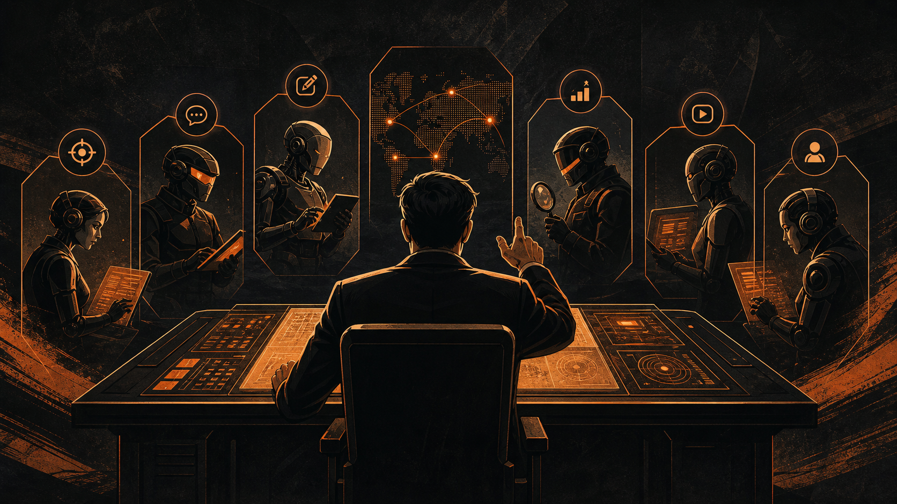
从业务痛点出发，不从工具出发。先问"公司里最痛、最高频、最耗人的工作是什么"，再问"要上什么工具"。
第一仗选高频、重复、可标准化的场景：订单、客服、合同、报表、销售跟进、内容本地化。
从提效降本起步，但不要只盯降本。更高价值是用同样的人服务更多客户、跟进更多线索、测试更多市场、覆盖更多国家。
AI转型不要上来就做大而全的战略，不要上来就买一堆系统，要先找到真正的业务痛点：重复的流程、干不完的工作、人研究不明白的问题，挑一个场景做深做透
裕同的问题很具体：客户采购单格式复杂：PDF、Excel、邮件、截图，里面是物料编码、数量、单价、币种、交期。过去靠人工录入和核对，又慢又容易错。
裕同搭的是订单数字员工：AI 先读采购单，抽字段，再和系统里的物料、价格、交期规则做比对。没问题的同步进系统，有问题的标出来给人处理。
这不是一个宏大的 AI 战略，但它解决了一个真实、高频、重复、容易出错的业务问题。
这是企业 AI 落地的前沿打法。Palantir 很早就在做，OpenAI、微软、很多咨询公司和系统集成公司都在往这个方向走。
外部特种兵不是普通工程师，也不是传统顾问。他要把业务痛点翻译成 AI 可以执行的流程，把 AI 能力翻译成一线员工能用的工具，把老板的经营目标翻译成系统里的任务、数据、规则和结果。
前线共创不是外包。外包是把需求丢给别人，等别人交付。前线共创是一起打仗，外部团队和老板、业务负责人、一线员工一起做出第一个系统，同时把先进的 AI 工作方式带进公司。
业务知道哪里痛，但不知道 AI 怎么做。技术知道怎么接系统，但不理解业务为什么痛。供应商知道怎么演示产品，但不一定愿意帮你改流程。最后：工具买了、培训做了、演示也有了，但没有一个真实业务流程被改变。
Wendy's 是美国连锁快餐品牌，背后的供应链组织服务北美几千家门店。表面上是餐饮生意，底层其实是一个复杂的供应链系统：门店会不会缺货、配送中心怎么调、哪些原料快过期、哪里突然需求上来。
Palantir 做的不是一张漂亮大屏，是把订单、库存、配送、供应商、餐厅需求这些数据接起来，让系统帮团队判断哪些地方会缺货、哪些资源可以重新分配、哪些配送中心需要调整。
重点不是 Wendy's 用了什么软件，重点是 AI 被放进了真实的供应链决策现场。
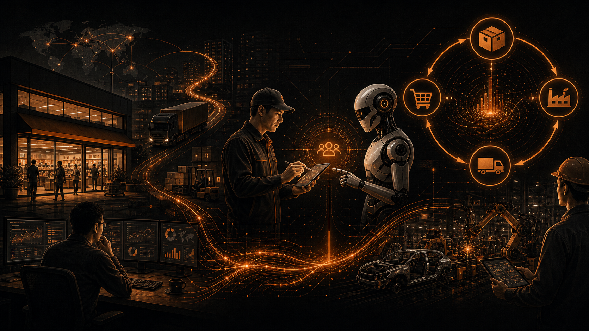
先培训人。不做全员大锅饭培训，先选一批业务感觉强、愿意尝试、能出结果、能带动团队的人，把他们训练成内部 AI 明星员工。
再扩场景。第一个速赢跑通后，把方法复制到客服、销售、财务、法务、供应链、营销。一开始从提效降本起步，越往后越要转向增收，甚至用 AI 做新业务。
最后建系统。不要一上来重资产搭平台、建中台、做企业大模型。先打场景，跑通以后再沉淀共用能力，多个场景都需要公司资料，沉淀知识库；都要接业务系统，沉淀工具连接；都要跑流程，沉淀工作流。系统不是凭空规划出来的，是从一个个真实场景里长出来的。
第一波 AI 项目做完，外部团队一走，内部就停了。通常三个原因：没有培养人 · 没有复制场景 · 没有沉淀系统。真正的 AI 原生，不是外部团队帮你做了几个智能体，而是公司里开始有人能发现新场景、改造新流程、复制新案例。
美的把 AI 放进翻译、设计、财务、营销、工厂等多个场景。它长期在做全员数字化和人才培养，也在推动 AI 产品和工具应用、AI 智能体人才认证。背后的组织逻辑是：先让人会用，再让场景扩散，最后让系统沉淀。
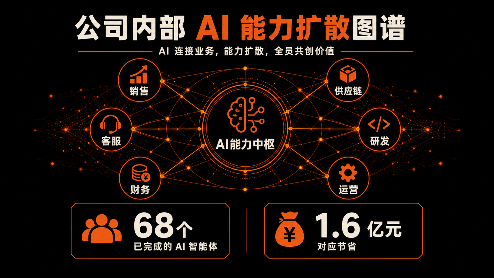
老板下场 → 打一场速赢 → 前线共创 → 把能力内化。
没有第一步，后面都跑偏。没有第二步，公司不会相信 AI 真有用。没有第三步，AI 进不了真实业务现场。没有第四步，外部团队一走，公司就停。
AI 是先用同样的人赚更多钱。但不会用 AI 放大自己的人，最终一定被时代淘汰。
术：一套能进生意的 AI 系统由什么组成。
道：老板怎么带公司一步一步把这套系统建起来。
接下来：我们当场，把一个真实业务痛点，做成第一个 AI 产品雏形。
上线你的第一个AI产品：
老板经营驾驶舱看板